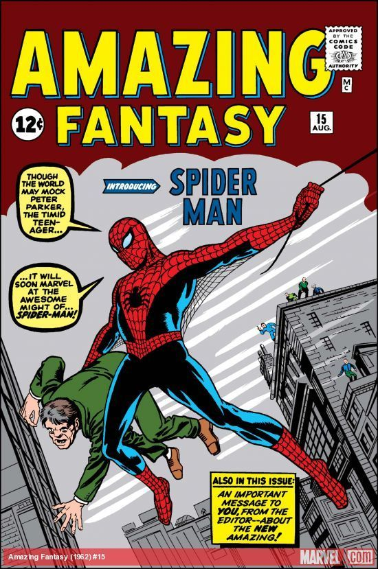
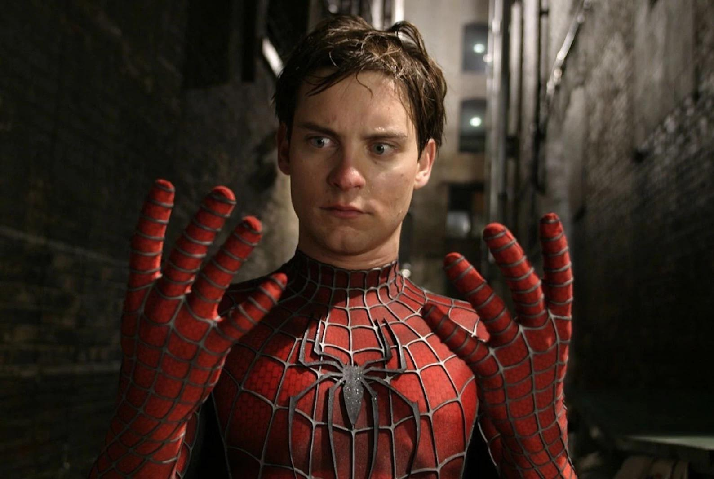

The Amazing Spider-Man
O Homem-Aranha é um dos heróis mais icônicos da Marvel, conhecido por sua agilidade, inteligência e senso de responsabilidade. Por trás da máscara está Peter Parker, um jovem comum que ganhou poderes extraordinários após ser picado por uma aranha radioativa — e decidiu usá-los para proteger a cidade de Nova York.

Explorando o Universo do Homem-Aranha
O Homem-Aranha é mais do que um herói com poderes extraordinários — ele representa a luta diária entre responsabilidade e vida pessoal. Por trás da máscara está Peter Parker, um jovem comum que enfrenta desafios como estudos, trabalho e perdas, enquanto protege Nova York de ameaças constantes.
Sua história começa com um evento simples, mas transformador: a picada de uma aranha radioativa. A partir disso, Peter ganha habilidades como força sobre-humana, agilidade e o famoso “sentido aranha”. No entanto, o que realmente define o personagem não são seus poderes, mas suas escolhas.
Guiado pelo lema “com grandes poderes vêm grandes responsabilidades”, o Homem-Aranha se destaca por sua humanidade. Ele erra, aprende e continua tentando fazer o certo, mesmo quando isso custa caro.
É essa combinação de ação, emoção e realidade que torna o Homem-Aranha um dos heróis mais admirados de todos os tempos.
